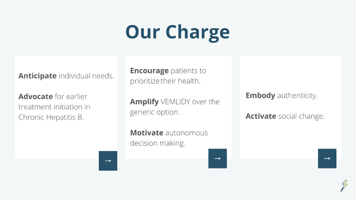
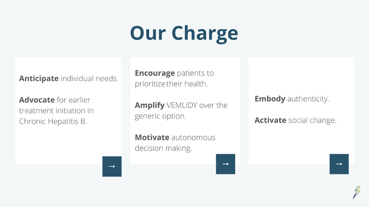

T.E.S.T with Vemlidy is a patient program that aims to instill and reiterate VEMLIDY’s role in the patient journey, and inspire a second chance at life where patients are in control.
Vemlidy is a FDA approved treatment of chronic Hepatitis B infection in adults with compensated liver disease. They are owned by Gilead, a leading pharmaceutical company that has committed to chronic Hepatitis B and is focused on expanding growth. Vemlidy is currently the only branded product in their category.
Hepatitis B is a viral infection of the liver that can be acute (<6 months) or chronic (>6 months). In 2016, approximately 862k people were living with chronic Hepatitis B (CHB) in the U.S., with prevalence highest among non-Hispanic Asian adults (21.1%) and those born outside the U.S. (11.9%). Studies have shown that this disease affects Asian immigrants born outside the U.S. significantly more than other people groups. Because of this, we were challenged to develop a patient program to encourage CHB patients within the AAPI community to begin Vemlidy treatment.
In this project, I co-led creative (UX & art direction) decisions in developing a patient outreach program for Gilead. Our team pitched this program to FCB Health & Vemlidy corporate executives, and our features will be used in the actual development Vemlidy's patient program!
→ 2021 (9 weeks)
→ Account Executives: Anita Clifford, Maxx Wexler, Carly Kwiecinski
→ Integrated Productions: Sonia Wee
→ Scientific Services: Roy Liu
→ Strategy: Ihina Ganguly
→ Art Direction: Komal Pawar, Maria Perez
→ Copywrite: Charlie Krause, Julianna Fosco
This project was conducted through a summer internship with FCB Health. A huge thank you to our mentors Eva Ismail, Olivia Simone, Nicole Bamba, Mark MacDonald, Jason Pacheco, and Nikki Brannigan!
01. PROBLEM
Because the CHB patient population is often asymptomatic, it is difficult for patients and their families to fully understand the importance of both starting and staying on treatment. Due to the stigma and sense of responsibility to their families, any patients do not seek treatment because they feel that being on treatment is more of a burden to their family than living with CHB.
With these concerns in mind, we framed our work around these two problems:
1. How can we increase the number of people who begin treatment?
2. How can we encourage people to continue treatment?
 

(Our team values & goals)
02. RESEARCH
Our research first focused on treatment, symptoms, and spread of CHB, before diving deep into the media usage, family relations, and cultural norms among the AAPI community, specifically those of Chinese, Taiwanese, Korean, and Vietnamese heritage.
We mapped a user journey from receiving their diagnosis at the initial doctor's appointment, to being introduced to Vemlidy, to overcoming the stigma within the community, and finally to adherence and taking control of their future. Our solution takes us through this journey in utilizing all aspects of our patient program.
03. SOLUTION
As a team, we aspired to provide tools that would enable people to embrace the future, prioritize their health, and through it all - take every step together. This inspired the name of our patient program: T.E.S.T.
→ PART 1: Intro to T.E.S.T with Vemlidy
In introducing Vemlidy's patient program, we wanted to convey upfront that the cost of treatment - both financially and emotionally - is worth it. We designed a discreet leave behind that provides an overview of the program, engagement events, and their personal patient portal.
We also created fun, collectable discussion cards to ensure patients are having productive and language accessible conversations with their healthcare providers. The cards have two different sets of questions, the first of which being the fundamental HCP-to-patient questions, and the second being tailored for patients to ask their doctors directly, allowing them to take control of the conversation.
(Leave-behind to be picked up at doctor's office)
(Steppingstones discussion cards)
→ PART 2: Hesitation
Patients are knowledgeable enough to know that Vemlidy’s branded medication costs more than the generic, which may cause hesitation on being a financial burden to their family, and thus leading them to disregard the importance of their own wellbeing. We combatted this through a digital space where upon entering the homepage, the value of taking every step together comes to full fruition, using authentic imagery of family and community to align with strategic messaging.
We designed a language dropdown bar into the main navigation bar, for those who either speak English as a second language or don’t speak English at all. Because first generation Asian Americans make up most of our patient demographic, language inclusion is a necessity for patient accessibility.

(Sample home page translated to Mandarin Chinese)
Like anyone else undergoing new medical treatment, patients will want help that’s human, which is why we’ve included a patient liaison tab right here on the website. Liaisons are Vemlidy representatives assigned upon language preference and on call to answer pressing questions, whether it has to do with financial support, insurance, or any additional CHB information. Liaisons are available via telehealth, email, or phone call and can help schedule necessary tests and appointments, coordinate delivery of Vemlidy and program materials.
→ PART 3: Fear of Isolation
With all the materials necessary to get started with Vemlidy and its patient program, patients arrive at the fear of isolation, perhaps the most difficult step to overcome. No matter how much their HCP or loved ones show their support, they may still be incredibly fearful of the isolating social conditions that often surround individuals with CHB.
If patients currently have a hard time helping themselves, including a way to help others might encourage them. Our STEPS Forum is a safe space where patients with CHB and their caregivers can openly communicate and navigate through advice and questions. The forum is also a preventative measure as it would also prevent the urge for patients to resist the treatment they need. It would provide genuine, personalized support for anybody who feels like a burden. We incorporated a ‘Monthly Challenge,’ to encourage patients to set their own goals and take charge of their own progress.
In addition to patient participation, our team strategized engagement events that would help to create widespread recognition and grow the market of Vemlidy as the premiere treatment for Chronic Hep B in specific cities. These events included:
“Take Every Step Together Walk” on World Hep B Day with a pop-up market of local artists and food stall vendors impacted by CHB to share local delights, spread awareness and celebrate the walk of life.
Laid-back family friendly events such as virtual movie nights, cooking and art classes hosted by CHB ambassadors to encourage patients to share more moments with their loved ones.
Virtual Speaker Events serve as a platform for us to help educate patients and their families about the prevalence of CHB and also the ways in which they can cope while living with the disease.
→ PART 4: Adherence
At this point, patients have found all the information she needs about Vemlidy. They find themselves in a position of really staying on track with her treatment and prioritizing their health. They will recognize that life goes on with Vemlidy by discovering our TESTWithVemlidy App, which allows patients to prioritize their health at ease.
Inspired by Boehringer Ingelheim’s RespiPoints’s patient rewards program for Stiolto Respimat, our team felt Vemlidy could provide something similar. People taking Vemlidy can get involved with T.E.S.T.’s Every Step Rewards program, a points system that rewards patients for engaging with its features. Users can accumulate points by contributing to the forum and utilizing digital pill tracking. Patients could further generate points by scanning QR codes provided at our engagement events. These points can later be redeemed for rewards, such as gift cards.

Our app includes a digital pill tracker, for those who want to make their long-term treatment as seamless as possible. The tracker functions as an electronic lunar calendar, displaying a personalized, user-friendly interface in which patients can select which time of day they’d prefer to take their daily dose. Included with digital pill tracking are push notifications, so patients will never forget to take their once-daily dose again. The digital pill tracker and its notifications are compatible with tablets, phones, and Apple Watches, and we provided a physical version for those who are not as tech-savvy.
Vemlidy can also partner with Memo Box, as an optional addition to TEST’s digital pill tracking feature. This pre-existing, portable electronic pill box connects to users’ mobile device via Bluetooth. Like the app’s digital pill tracker, the box’s software reminds patients to take their medication based on a personalized schedule. Patients are provided with a practical place to store and organize their pills, especially if they are taking Vemlidy on top of anything else.
(Mockups by Komal Powar)
05. FINAL
At the end of this process, we designed a patient program that was twofold. We strategized outreach materials to encourage patients to seek treatment and talk openly about their condition with family, friends, and healthcare providers through discussion cards, an anonymous online forum, and liaison program. We also developed treatment adherence materials to encourage patients to continue seeking treatment through an app, rewards system, smart pill tracker, and physical handouts. These were all housed in a digital space for patients to foster community and access necessary resources.
You can visit the full site here: Adobe XD Prototype
06. REFLECTION
Our goal for this design was to overcome the stigma of CHB in the AAPI community and personal burden to encourage patients to seek treatment, adhere to it, and take control of their future. I'm eternally grateful for the opportunity to work with talented people from different backgrounds, and learn more about the pitch process within an advertising agency. This project taught me how to adhere to healthcare accessibility guidelines, creatively modify the client's brand guidelines, adjust to different forms (pamphlets, app, website, etc), and ultimately pitch all of this to corporate executives.
Partaking in the process from research to strategy to design, I've learned how to create features that more directly target our users, and how each step translates to the next. For example, each piece of user research led to a key insight that sparked an aspect of our program. I'm proud of our team's performance in the pitch competition, and am excited to see Vemlidy incorporate our features into their actual patient program.